Rakamin · Case Study: Fullstack Product Engineer
Making the AI interview platform honest at the point where evidence becomes a judgement about a person, and keeping that judgement inside the company that owns it.
| Candidate | Sultan Z. M. (Frontend Engineer Intern application) |
| Pull request | github.com/rakamindev/ai-interview-platform/pull/185 |
| Video walkthrough | youtu.be/Bro84QWgvWM |
| Repository | github.com/rakamindev/ai-interview-platform, branch feat/candidate-assessment-revamp |
| Seeded fault branch | SultanZhalifa/ai-interview-platform, scratch/seeded-fault |
| Working files | /assessment in the PR: every claim here links to a document, test or evidence file there |
| Data | All names in screenshots and evidence are invented. No real candidate data was used. |
The platform interviews a candidate with an AI voice, tracks which skills the conversation actually reached, rates each skill L1 to L5, compares the ratings with a vacancy and writes a recommendation that ends up in a PDF for the hiring manager.
The core problem: the product could not tell "we did not measure this" from "the candidate is weak at this". A skill the interview never reached was stored as L1, shown as "L1 Foundational", reported as a Gap and written into the hiring narrative as fact. A candidate whose audio dropped after one sentence received "Gap" on every skill and the line "not yet at the level to independently contribute". The assessor had no way to see it: the Required column was blank on every report, confidence was hidden, and correcting a rating broke the PDF export. Separately, any assessor could read and rescore another company's candidates by changing an id in the URL.
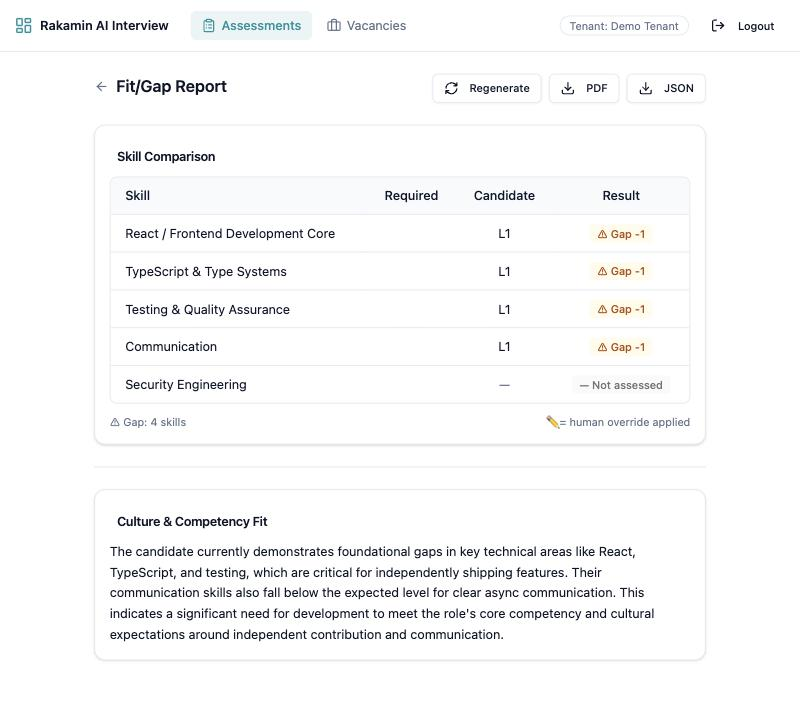
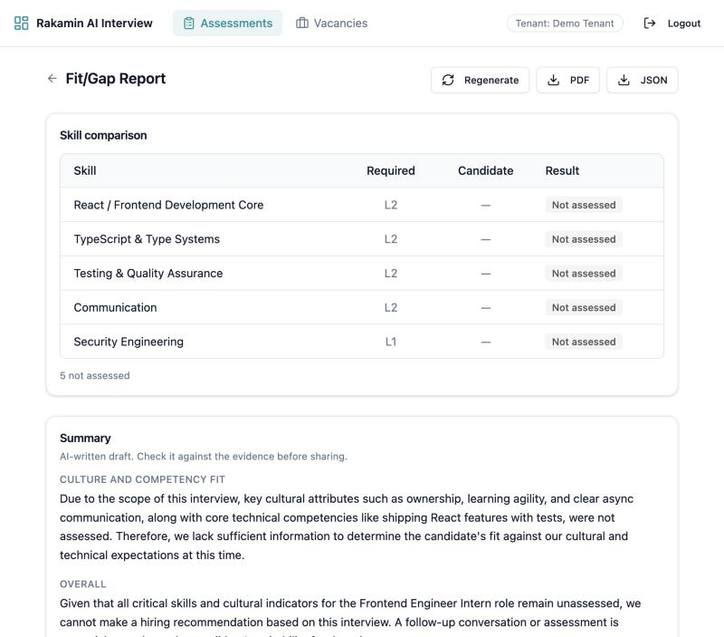
Fresh macOS machine, no Docker: Ruby 3.3.2 via rbenv, PostgreSQL 16 and Redis via Homebrew, Node 26. Branch feat/candidate-assessment-revamp off main; small commits, one concern each. Local secrets only in git-ignored files; a secret scan runs before every commit.
Getting it to run surfaced eight onboarding defects. They are small, but each one costs a new engineer time, and two of them hide real risk (S5, S8).
| # | What happened | Fix used |
|---|---|---|
| S1 | Puma forks 2 workers; on macOS every forked worker crashed on the first request (empty replies). | WEB_CONCURRENCY=0 locally |
| S2 | bin/rails committed without the executable bit. | bundle exec rails |
| S3 | web/.env.example points at port 3000; the API listens on 3001. | Local .env |
| S4 | README uses an old repo path and an env var name the code does not read. | Followed the code |
| S5 | Every model id in the sample and README returns 404 on a new key, so generation fails out of the box (finding N2). | gemini-2.5-flash locally |
| S6 | No lockfile in web/. | Committed it for CI |
| S7 | SECRET_KEY_BASE "must match rakamin-api", a service not in the repo. | Local value; escalated |
| S8 | Sidekiq in development keeps the code it booted with. | Restart after changes |
The live audio interview is not reproducible on demand, so I seeded realistic transcripts and coverage maps for fake candidates in two tenants, then drove everything else through the real API, Sidekiq and Gemini: ending sessions, generating portfolios, overriding, fit/gap, export. Three scenarios carried most of the analysis:
not_yet.The code implies a careful pipeline: coverage states, a two-probe gate, a confidence rule in the PRD. In use, every one of those signals was dropped at the last step. The model was free to rate a skill the coverage map said was never reached, and the screens showed that rating with the same weight as a well-probed one.
For entry-level roles the scarce resource is a qualified person's time to talk to candidates. CV parsing, keyword screening, applicant tracking and online tests are commoditized. The leverage is a structured, evidence-backed signal about how a person thinks, produced at the cost of software, and it is only worth something if a recruiter trusts it enough not to re-interview. Candidates often join from a phone on a mobile connection, sometimes in a second language; dropped audio and mixed Bahasa Indonesia and English are normal conditions, not edge cases. (Qualitative reasoning; I did not find figures I could verify, so none are quoted.)
| Who | Their day | What they need here |
|---|---|---|
| Recruiter / assessor | Many candidates per role, skims between calls | In seconds: which ratings are solid, thin, or never measured; correct the AI and move on |
| Hiring manager | Reads a forwarded PDF | Required vs candidate on every row; no verdicts on unmeasured skills; visible human changes |
| Candidate (did not choose it) | Cannot see or contest the result | A failed session is a reason to re-invite, never a weakness on their record |
| Provision | What it says | Product consequence |
|---|---|---|
| Pasal 10 (1) | A data subject may object to a decision based solely on automated processing, including profiling, with legal effects or a significant impact. | The visible override and "AI-written draft" labels keep the decision from being solely automated. There is still no way for a candidate to object: escalated. |
| Pasal 34 (1)-(2) | A data protection impact assessment is required for high-risk processing, including automated decisions with significant effects and evaluation or scoring. | This product does both. Clients need a DPIA; the product should give them what it needs. Escalated. |
| Pasal 16 (1) | Principles include telling subjects the purpose of processing, and deleting data when retention ends or on request. | No consent notice, retention period or deletion path today (F9). Personal data in logs (N1) fixed in this change. |
Sources: pasal.id (Pasal 34); Wikisource transcription of the official text (Pasal 10, Pasal 16); Hukumonline on DPIA. Links in assessment/02-context.md. Not legal advice.
Findings were reproduced on a running system with fake data, except the parts marked as read from code (the consent gap in F9, the production log level in N1). Two that did not hold up as written were downgraded (F4, F8); a report with a false finding is worse than a shorter one.
| # | Sev | Type | Finding and one-line impact |
|---|---|---|---|
| F1 | P0 | Defective impl | Portfolio, skill, override and fit/gap records are not tenant scoped. Impact: an assessor at company A downloaded, rescored (201) and ran fit/gap on company B's candidate. |
| F2 | P0 | Missing spec + defect | Coverage never gates a rating; a missing level becomes L1. Impact: candidates are rated and described as weak on skills nobody asked about, up to the hiring recommendation. |
| F3 | P1 | Defect (seam) | API sends expected_level, web reads required_level; override flag never serialized. Impact: the Required column was blank on every report ever generated. |
| F4 | P1 | Defect | Confidence taken from the model, not the PRD rule; fit/gap ignores it. Impact: a one-question skill weighs the same as a well-probed one. (Wrong labels were not observed in these runs.) |
| F5 | P1 | Defect | Non-atomic destroy_all + create!. Impact: one capitalised word from the model wiped the assessor's overrides and left 1 of 5 skills. |
| F6 | P1 | Defect + missing spec | Retry during Sidekiq retries queues a second job; stalled runs cannot be restarted. Impact: duplicate model spend; a stuck result needs a developer. |
| F7 | P1 | Defect | Fit/gap page POSTs on every 404 while polling. Impact: two model calls per page view; the narrative changed under the reader. |
| N1 | P1 | Defect | No parameter filtering at the production log level. Impact: login passwords and candidate names written to logs in plain text. |
| F10 | P1 | Defect | PDF fonts only cover Windows-1252; the override line has an arrow. Impact: every corrected portfolio failed to export, silently. |
| N2 | P1 | Defect (config) | Shipped model ids return 404; the stored error drops the reason. Impact: every portfolio fails out of the box with no explanation. |
| N3 | P1 | Defect (conditional) | A signed token without a scheme claim can pick any tenant via header or Referer. Impact: depends on whether such tokens exist (escalated). |
| F9 | P1 | Missing spec + defect | No consent, retention or deletion; narratives built from counts only although PRD-02 specifies competency summaries. Impact: automated profiling the candidate cannot see or contest. |
| F8 | P2 | Defect | Override deleted the report before regenerating; no audit trail. Impact: report vanishes after each override; reviewers cannot see why a rating changed. |
| F11 | P2 | Defect (UI) | Failure reasons hidden, export offered on failed portfolios, errors swallowed, recommendation never shown. Impact: assessors cannot see what went wrong. |
| F12 | P2 | Defect (UI) | Mobile: page scrolled sideways (550 px content on 375 px), the Result column off-screen. Impact: the key column is unreadable on a phone. |
| N4 | P3 | Defect | Model sometimes returns lowercase skill ids; matching relied on a label fallback. Impact: fragile, no wrong match observed. |
Never defined: what an unmeasured skill is called and how it counts; recovery from stuck generation; consent, retention, deletion and the candidate's right to contest; where culture-fit evidence comes from; how an override is audited. Defined but broken: tenant isolation, the PRD confidence rule, the fit/gap contract, atomic regeneration, one job per request, PDF export, log filtering, shipped model ids.
scheme? If not, N3 is a P0. Should this service verify tenant membership instead of trusting claims?v1; current Pro models are not available there for new keys. Who owns model choice?tenant_id.Written before any product code changed (04-revamp-strategy.md, committed as dab60ca). The slice is the path from evidence to decision, because a wrong result there reaches a candidate; the P0 tenant fix and the cheap log fix come along because a "trustworthy report" another company can read would be hollow.
| AC | Correct behaviour, including the edge cases |
|---|---|
| AC1 | not_yet is Not assessed with no level or confidence, whatever the model says; zero candidate turns means no model call; never a gap; same in UI, PDF, JSON. |
| AC2 | Level 3, "3", "L3", 3.0 parse; nil, 0, 7, 2.5, "three", arrays become needs review, not L1. Evidence coerced to 3 strings of 500 chars; blank summary keeps the level; ids matched in any case; invented and duplicate skills dropped; non-JSON response retried with nothing written; a failure halfway leaves old rows intact. |
| AC3 | Confidence from coverage per PRD (high: covered and 3+ probes; medium: 2 probes or partial; low: 1 or initiated), weakest wins on overlap; the model's label is ignored. |
| AC4 | Every row shows required, candidate, confidence and result; low confidence is provisional; overrides flagged with the AI level; legacy reports served with defaults and marked stale; both narratives shown as a draft; empty vacancy has an empty state. |
| AC5 | Another tenant's ids return 404 on export (JSON, PDF), fit/gap read, generate and regenerate, and override; workers still find records. |
| AC6 | Regeneration updates skills in place and keeps overrides, even when a skill becomes not assessed; an override of an unassessed skill needs a note; notes capped at 2,000. |
| AC7 | One fit/gap job per pair across tabs; the page POSTs once; between retries the portfolio stays generating with the reason and Retry is refused (409). |
| AC8 | A run stuck for 20 minutes is reported as stalled and can be restarted. |
| AC9 | PDF export works with an override, Indonesian, Greek, Cyrillic, CJK, emoji and 5,000-char text; failures are shown in the UI. |
| AC10 | Passwords, tokens, emails, candidate names, notes and transcript text are filtered from logs. |
| AC11 | Loading, empty, not assessed, needs review, low confidence, partial, generating, stalled, failed, fetch error, long text, 375 px without horizontal scroll. |
| Decision | Chosen | Rejected, and why |
|---|---|---|
| Representing "not assessed" | Status column, nullable level, DB constraints. One row per skill, needs review representable, enforced by the database. Down-migration refuses rather than inventing levels. | No row, derive from coverage: no place for needs review; every future reader must remember the merge, which is how F2 happened. Sentinel level 0: the current bug with a different number. |
| Tenant isolation | Scope through the parent session (verified that Rails 7.0 applies the default scope inside the join). Closes the P0 with no data migration; request specs pin it. | tenant_id on child tables: better defence in depth, but a production backfill under deadline. Proposed as the follow-up. |
| Fit/gap contract | Keep expected_level, fix the web, shared contract file read by both suites. | Rename the API field: stored JSONB keeps the old name anyway. Fix the web only: nothing stops the next drift. |
| Model output | Strict server-side normalizer: works for any model or prompt. | JSON-schema mode alone: depends on model and API version (see N2); a good follow-up, never a replacement for validation. |
| Duplicate jobs | POST once in the UI + Redis lock per pair, released by the worker, TTL for dead workers. | UI only: two tabs still double-spend. sidekiq-unique-jobs: a dependency to defend for a 20-line need. |
| PDF text | Embed Noto Sans (OFL): names print as spoken. | Transliterate to Windows-1252: silently mangles non-Latin names on a person's record. |
| Area | Change |
|---|---|
| Data model | assessment_status and status_reason; level and confidence nullable; check constraints for "level exactly when assessed"; rules_version, generation progress columns. Four reversible migrations, each run up, down and up on existing rows. |
| Generator | Skills from the coverage map; no model call when nothing was discussed; per-skill normalizer; PRD confidence; in-place upsert in a savepoint with a row lock; readable failure reasons; failed only when retries run out. |
| Fit/gap | Not assessed and needs review are never gaps; provisional and override flags; narratives from competency summaries; serializer with defaults and stale / outdated / generating; Redis lock; report kept during refresh. |
| Security | Tenant scope on every portfolio lookup; parameter filtering; override validation. |
| Export | Unicode font; overrides in words; provisional and assessor-set results marked; AI text labelled. |
| Web | Types mirror the contract (which turned F3 into compile errors); table, cards, override form and both pages handle every state; one fit/gap request then polling; mobile layout; one small Notice component. |
| Harness | RSpec with factories and a guard against real model calls; Vitest + Testing Library; GitHub Actions; contracts/fit_gap_report.example.json. |
assessment/evidence/tests/. 151 RSpec examples and 33 Vitest tests pass; tsc and the production build are clean.scratch/seeded-fault, each reverted with git revert so the history stays visible:
| Fault | Commits | Caught by |
|---|---|---|
Let not_yet skills be rated again (F2) | 2b67f0b / c15c80d | 13 RSpec failures; 9 stopped by the model validation, a second line of defence |
| Export without the tenant scope (F1) | 3c788f2 / 55382aa | Both cross-tenant export specs (200 and 500 instead of 404) |
| Re-request fit/gap on every poll (F7) | c6dfe72 / 68178bb | Hook tests: "called 3 times" instead of once |
ai-verification-log.md)The error path saved a half-written skill. My first generator built new skills through the association. When a save failed inside the transaction, the existing rescue called portfolio.update!, which autosaved the unsaved skill outside the rolled-back transaction: exactly the partial write this change was meant to remove, and it would have happened in production. The atomicity spec caught it; I found the cause by printing the surviving rows instead of guessing.
A wrong explanation, corrected. I first blamed nested transactions and logged a symptom I had not observed. Re-reading the log, I tested the claim (removed requires_new; every spec still passed: RSpec's transaction is non-joinable) and corrected the entry and the code comment in a separate commit.
Also logged: a shell quirk that made every model look like a 404; trusting a metadata endpoint; a regenerate path that made every just-queued run look stalled (caught reviewing my diff, spec first); two wrong test expectations fixed by making one stricter, not looser; a "missing name" that was a screenshot taken mid-load; a fake test password a secret scanner flagged on the PR; and a lock any job could release, found while listing failure modes and fixed with a token-owned lock.
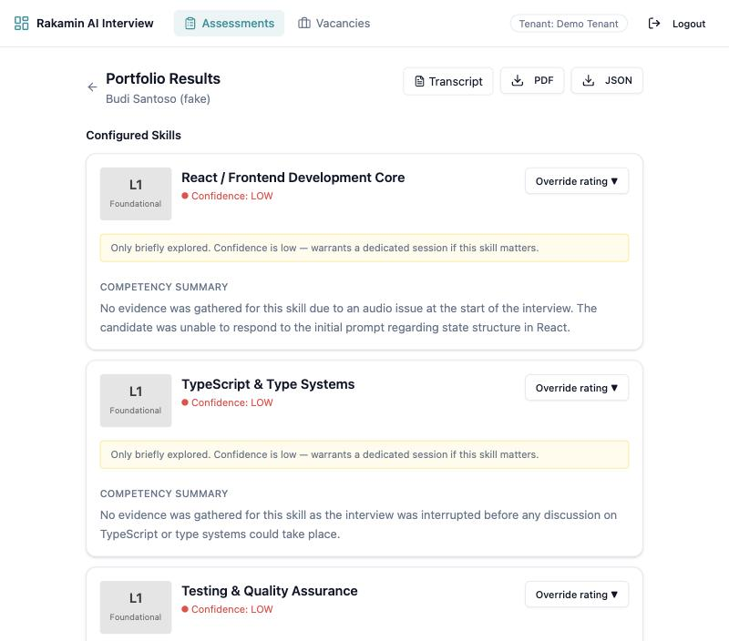
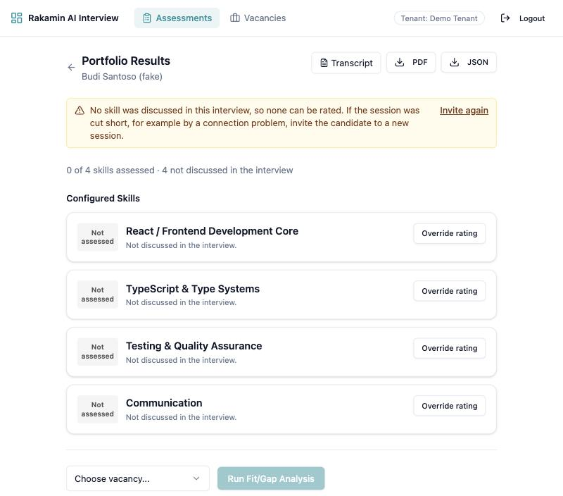
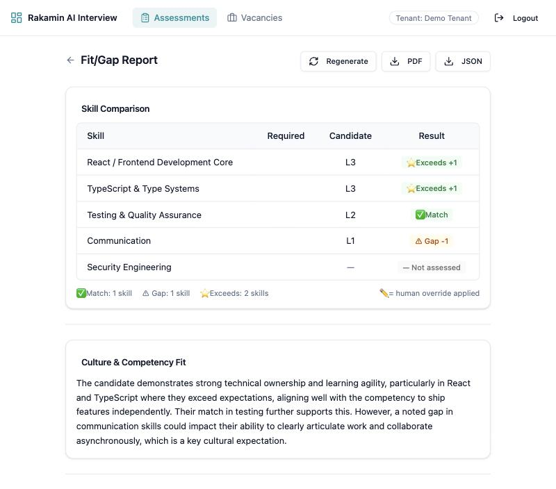
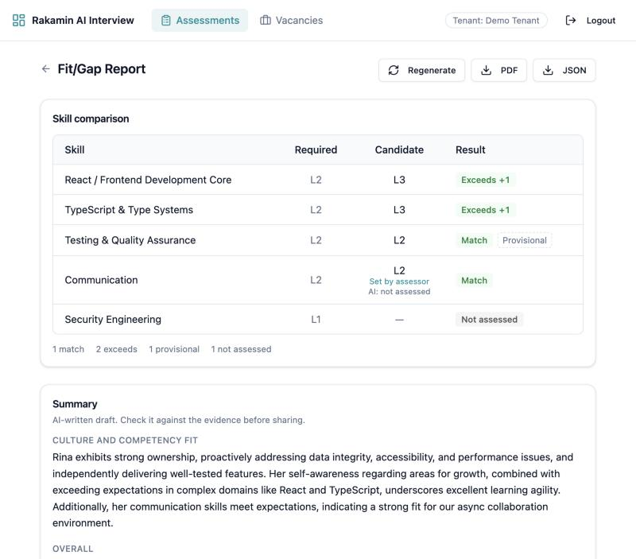
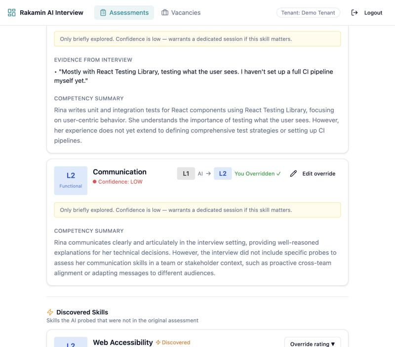
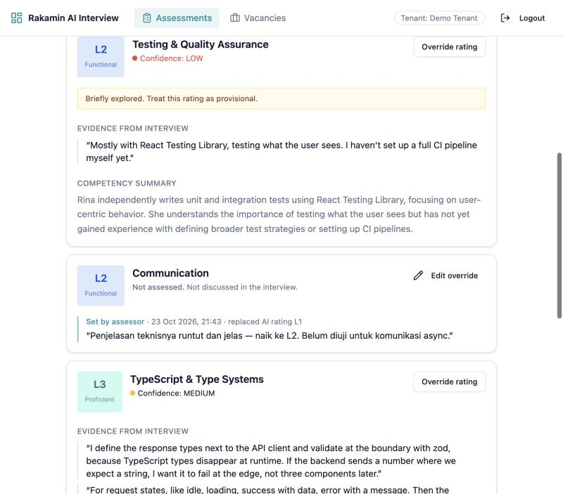
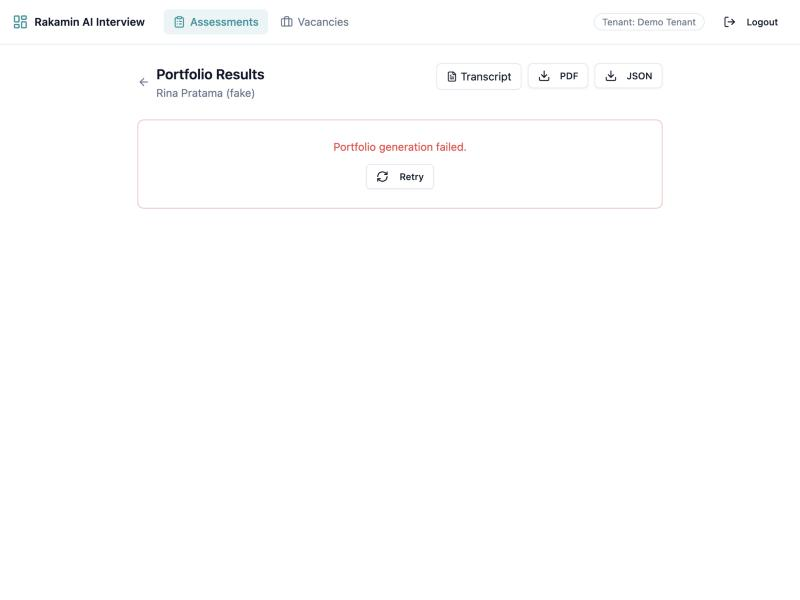
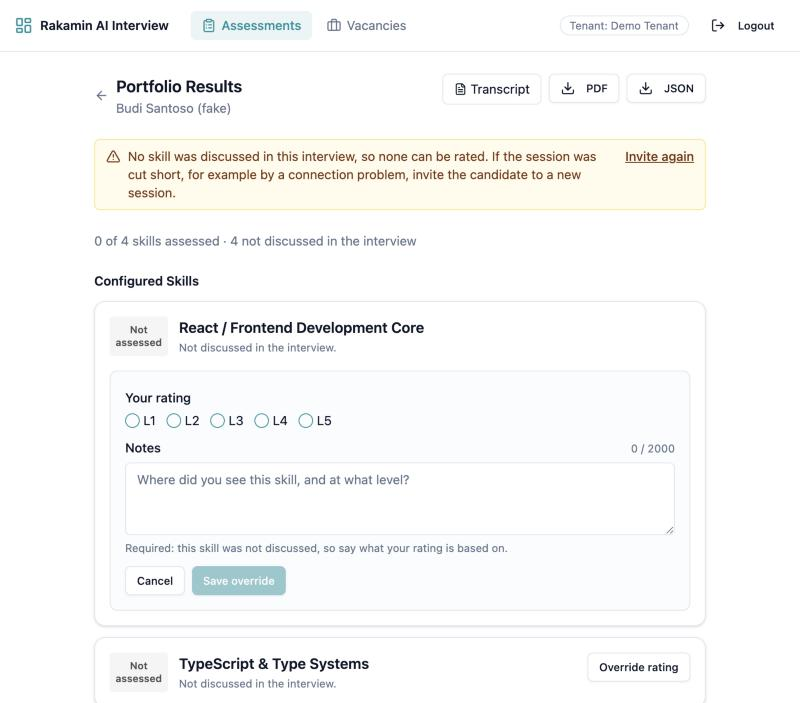
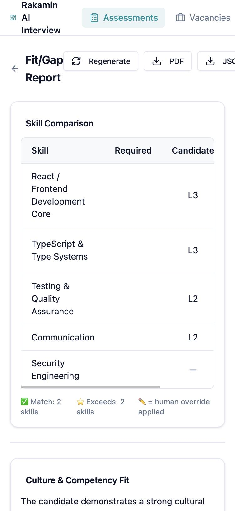
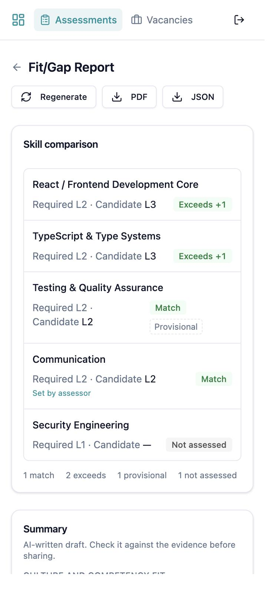
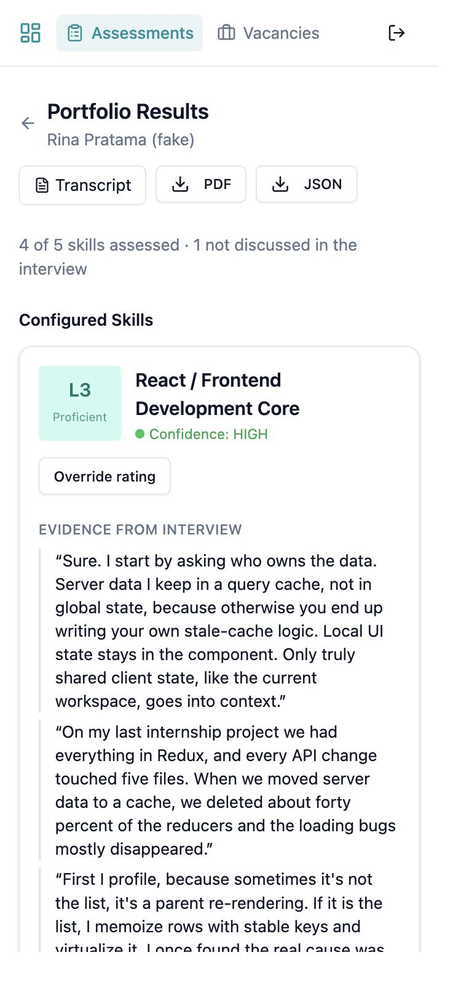
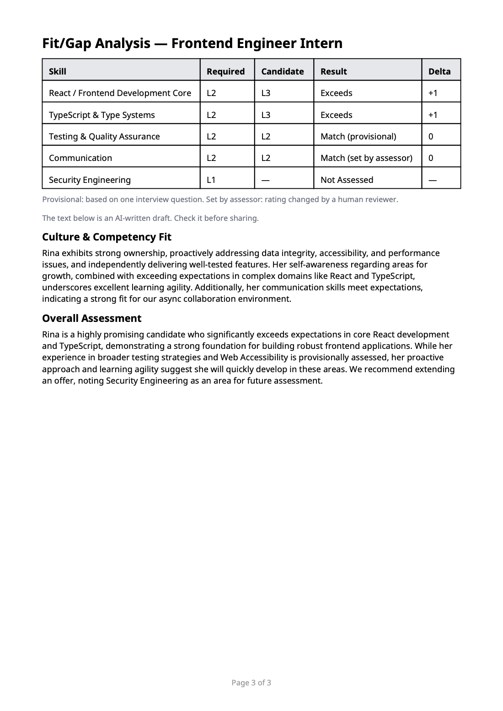
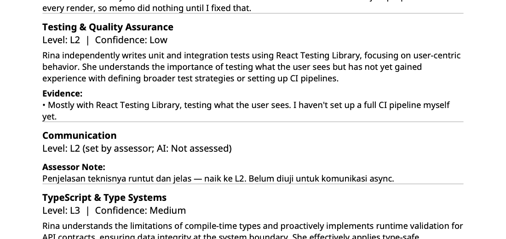
gemini-2.5-flash for both model roles; production model choice is open (N2).tenant_id on child tables as a second isolation layer.not_yet means no evidence was collected, whatever the model says.initiated with one probe is a real but thin signal: rated, low confidence, provisional in fit/gap.expected_level.Source documents in the PR: assessment/01-setup-notes.md, 02-context.md, 03-findings.md, 04-revamp-strategy.md, 05-execution.md, ai-verification-log.md, evidence/, screenshots/.